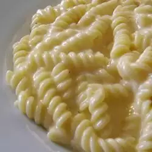

This is a spiral mac and cheese recipe my family has been using for a long time. I'm not sure where it originated from, but we definitely enjoy every bite!
Bring a large pot of lightly salted water to a rolling boil over high heat. Stir in fusilli and return to a boil. Cook, uncovered and stirring occasionally, until tender yet firm to the bite, about 12 minutes. Drain well in a colander set in the sink.
Preheat the oven to 400 degrees F (200 degrees C). Lightly grease a casserole dish.
Melt margarine in a large saucepan over medium heat. Add onion and cook until translucent, about 5 minutes. Whisk in flour and cook for 1 minute. Slowly whisk in milk until entirely incorporated.
Add cheese food, blue cheese, Cheddar, salt, pepper, and mustard; cook and stir continually until cheeses have melted and mixture is thick. Fold in pasta until coated, then pour mixture into the prepared casserole dish.
Bake in the preheated oven until the top begins to brown, about 20 minutes.